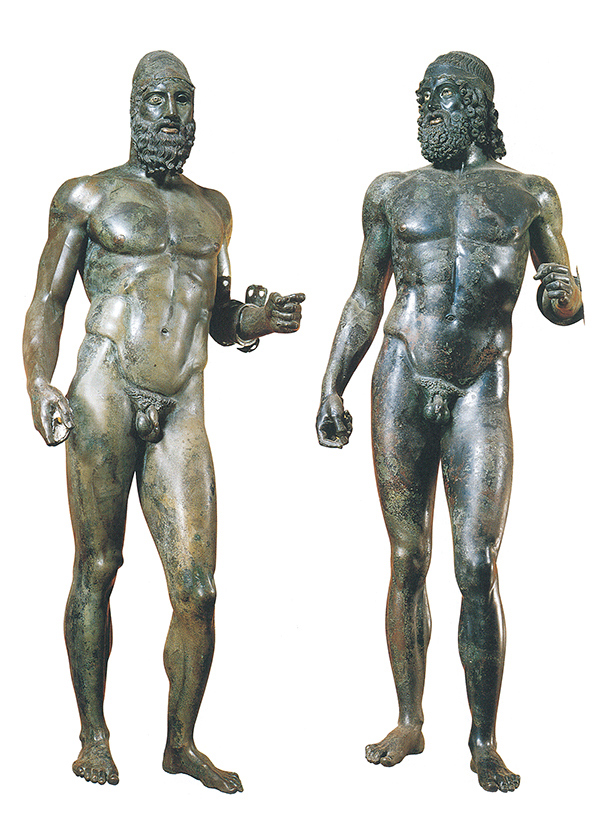

28
UNA HISTORIA SIN FIN
El triunfo de las vanguardias
Este libro se escribió poco después de la segunda guerra mundial y se publicó por vez primera en 1950. En aquella época, la mayoría de los artistas mencionados en su último capítulo vivían aún, y unas pocas de las obras que lo ilustraban eran de fecha reciente. No es extraño que, con el paso del tiempo, se me pidiera que añadiese un nuevo capítulo dedicado a los acontecimientos en curso. En realidad, las páginas que el lector tiene ahora ante sí fueron ampliamente añadidas a la undécima edición bajo el título Postscript 1966. Pero como, a su vez, dicha fecha fue retrocediendo en el pasado, sustituí aquel título por el de Una historia sin fin.
Confieso que ahora lamento esta decisión porque considero que induce a confundir la historia del arte, tal como aquí se la concibe, con una crónica de modas. Y no es que tal confusión pueda en cierto modo sorprender. Después de todo, no tenemos más que volver las páginas de este libro para recordar las muchas ocasiones en que las obras de arte reflejaron la elegancia y el refinamiento de la última moda, si volvemos ya hacia las delicadas damas de Las muy ricas horas del duque de Berry, de los hermanos De Limburgo, que celebran la llegada del mes de mayo (ilustración 144), ya al ensoñado mundo rococó de Watteau (ilustración 298). Pero al encarecer esas obras no debemos olvidar cuán rápidamente periclitaron las modas reflejadas por ellas, mientras que los cuadros retuvieron su atractivo: El matrimonio Arnolfini, con su refinamiento tal como lo pintó Jan van Eyck (ilustración 158), hubiera resultado divertido en la corte española tal como la pintó Diego Velázquez (ilustración 266), y de la encorsetada infanta de esta obra, a su vez, podrían haberse burlado despiadadamente los niños retratados por sir Joshua Reynolds (ilustración 305).
Lo que ha dado en llamarse el tiovivo de la moda tendrá, desde luego, tendencia a seguir girando mientras haya gente con bastante tiempo y dinero como para desear impresionar a la sociedad con nuevas excentricidades, y, ciertamente, ésta puede ser una historia sin fin. Las revistas de modas que mantienen informados a los que quieren estar al día sobre lo que hoy se lleva son muy parecidas a los periódicos de noticias. Los acontecimientos diarios solamente se transforman en historia cuando hemos adquirido suficiente distancia como para saber qué efecto (si surten alguno) han tenido sobre los acontecimientos posteriores.
La aplicación de estas reflexiones a la historia del arte tal como se la ha relatado en estas páginas no requiere muchas explicaciones. La historia de los artistas sólo puede ser contada cuando, tras un cierto período, se ha hecho patente la influencia de su trabajo sobre otros artistas, procurando verse cuáles han sido sus contribuciones a la historia del arte como tal. Por eso he intentado seleccionar, de la masa de edificios, esculturas y pinturas que todavía conocemos después de miles de años, un número muy reducido para figurar en una historia que, ante todo y principalmente, trata de las soluciones a ciertos problemas artísticos, esto es, soluciones que determinaron el curso de los acontecimientos posteriores.
Cuanto más nos acercamos a nuestra propia época, se hace cada vez más difícil distinguir entre las modas pasajeras y los logros duraderos. La búsqueda de alternativas a la contienda con las apariencias naturales que describí en las páginas precedentes tenía todas las probabilidades de acabar en excentricidades dirigidas a llamar la atención, pero, asimismo, abrió un vasto campo de experimentación con el color y la forma, que aún está por ser explotado. Lo que todavía no sabemos es con qué resultados.
Ésta es la causa de que yo me sienta incómodo con la idea de que uno pueda escribir la historia del arte «hasta la fecha presente». Es verdad que se pueden apuntar y discutir las últimas tendencias de la moda, hablar de las figuras que están en el candelero en el momento de escribir. Pero solamente un profeta podría decir si estos artistas harán historia, y, en general, los críticos han resultado ser malos profetas. Imagínese a un crítico bien intencionado e imparcial intentando poner la historia del arte «al día» en 1890. Con toda la buena fe del mundo, no hubiera podido saber que las tres figuras que estaban haciendo historia en aquel momento eran Van Gogh, Cézanne y Gauguin; el primero, un loco holandés de mediana edad trabajando en el lejano sur de Francia; el segundo, un caballero retirado y acomodado que hacía años que no enviaba cuadros a exposición alguna; y el tercero, un corredor de bolsa que se había convertido en pintor ya mayor y que pronto partió hacia los mares del sur. La cuestión no es tanto si nuestro crítico habría sido capaz de apreciar las obras de estos hombres, sino si hubiera llegado a saber de su existencia.
Cualquier historiador que haya vivido lo suficiente como para experimentar qué sucede a medida que el presente se convierte en pasado, tiene algo que decir acerca de cómo cambian los perfiles con la distancia. El último capítulo de este libro viene como anillo al dedo. En la época en que escribí el relato sobre el surrealismo no era consciente del hecho de que un refugiado de cierta edad, cuya obra llegaría a tener influencia creciente en los años subsiguientes, aún estaba vivo y residía en Inglaterra en el distrito de los Lagos. Me refiero a Kurt Schwitters (1887-1948), a quien yo tenía por uno de los cordiales excéntricos de inicios de los años 20. Schwitters utilizaba billetes de autobús, recortes de periódico, harapos y todo tipo de materiales y los pegaba para formar conjuntos divertidos y de bastante buen gusto (ilustración 392). En su negativa a utilizar pintura y lienzos convencionales, mostraba su adhesión a un movimiento extremista que se había iniciado en Zurich durante la primera guerra mundial.
392 Kurt Schwitters, Tinta invisible, 1947. Collage sobre papel, 25,1 x 19,8 cm; propiedad del artista.
Podría haber hablado de este grupo de los dadá en la sección del capítulo precedente dedicada al primitivismo. Allí mencioné la carta de Gauguin en la que decía sentir que tenía que retroceder más allá de los caballos del Partenón, hasta el caballito de madera de su infancia; y las sílabas infantiles da-da pueden simbolizar un juguete semejante. Ciertamente, era deseo de aquellos artistas transformarse en niños y darle una higa a la solemnidad y la pompa del Arte con A mayúscula. No resulta difícil comprender tales sentimientos, pero a mí siempre me ha parecido un tanto incongruente registrar, analizar y enseñar estos gestos del antiarte con la misma solemnidad, por no decir pompa, que ellos se habían propuesto ridiculizar y abolir. Pese a ello, no me puedo acusar de haber desechado o ignorado los sentimientos que animaron aquel movimiento. Traté de describir el estado de ánimo en el que las cosas de la vida cotidiana de un niño pueden adquirir un significado vívido. Es verdad que no preví hasta qué punto el retorno a la mentalidad infantil acabaría por esfumar la diferencia entre las obras de arte y otros objetos hechos a mano. El artista francés Marcel Duchamp (1887-1968) adquirió fama y notoriedad en base a coger cualquier objeto (al que él llamaba ready-made [ya-hecho]) y firmarlo; y otro artista mucho más joven, Joseph Beuys (1921-1986), que siguió sus pasos en Alemania, sostenía que él había ampliado la noción de arte.
Espero sinceramente no haber contribuido a esta moda —pues pronto se puso de moda— abriendo estas páginas con el comentario de que «No existe, realmente, el Arte». Lo que yo quería decir, claro está, es que la palabra arte ha significado cosas distintas en épocas distintas. En Lejano Oriente, por ejemplo, la caligrafía es la más respetada entre todas las artes. Pero he aducido también que hablamos de arte cada vez que algo está tan superlativamente bien hecho que hasta olvidamos preguntar qué es, de tanto como admiramos el modo en que ha sido realizado. He sugerido que, cada vez más, ha sido esto lo que ha sucedido en pintura. Los acontecimientos posteriores a la segunda guerra mundial me han dado la razón. Si por pintura queremos decir simplemente la aplicación de pigmentos sobre el lienzo, hay aficionados que admiran el modo en que se ha hecho esto sin tener nada más en cuenta. Incluso en el pasado, la manera en que un artista manejaba la pintura, la energía con que aplicaba las pinceladas o la sutileza de su toque eran aspectos apreciados, pero siempre dentro del contexto general del efecto logrado. Volvamos hasta la ilustración 213, y contemplemos cómo ponía la pintura Ticiano para indicar una golilla; a la ilustración 260, para disfrutar con la firmeza de la pincelada de Rubens al pintar la barba del fauno. O fijémonos en el virtuosismo con que los pintores chinos (ilustración 98) aplicaban su pincel sobre la seda con una gradación sutilísima, en la que sin embargo no puede apreciarse rastro alguno de insistencia. En China, concretamente, era donde se discutía y admiraba más la maestría de la pincelada. Recordemos que la ambición de los maestros chinos era adquirir tanta facilidad en el manejo del pincel y la tinta que pudieran escribir su visión mientras la inspiración estaba todavía presente, de un modo parecido a como el poeta anota su verso. Ciertamente, para los chinos escribir y pintar tienen mucho en común. Acabo de mencionar el arte chino de la caligrafía, pero lo que los chinos admiran en realidad no es tanto la belleza formal de los caracteres como la maestría y la inspiración que deben informar cada trazo.
Aquí, por tanto, había un aspecto de la pintura que parecía estar por explorarse: la pura manipulación de la pintura, independientemente de cualquier motivo o propósito posterior. En Francia se llamó tachismo, de tache (mancha) a esta concentración sobre la marca o mancha del pincel. Fue sobre todo el artista estadounidense Jackson Pollock (1912-1956) quien suscitó interés por su modo de aplicar la pintura. Pollock se había sentido cautivado por el surrealismo, pero pronto abandonó las extrañas imágenes que poblaban sus lienzos, sustituyéndolas por ejercicios de arte abstracto. Impacientándose con los métodos convencionales, puso su lienzo en el suelo y vertió, goteó o lanzó su pintura formando configuraciones sorprendentes (ilustración 393). Seguramente recordaría las historias de los pintores chinos que habían utilizado estos métodos tan poco ortodoxos, así como cierta práctica de los indios americanos, que hacen pinturas en la arena con fines mágicos. El enredo de líneas resultante satisface dos exigencias opuestas del arte del siglo XX: el anhelo de la simplicidad y la espontaneidad de la infancia, que evocan la memoria de los garabatos en una etapa del crecimiento anterior incluso a la formación de imágenes; y, en el extremo opuesto, el sofisticado interés por la problemática de la pintura pura. Por todo esto, Pollock fue aclamado como uno de los iniciadores de un nuevo estilo llamado action painting (pintura en acción) o expresionismo abstracto. No todos sus seguidores usaron métodos tan extremos como Pollock, pero todos ellos creían en la necesidad de rendirse al impulso espontáneo. Al igual que la caligrafía china, estos cuadros deben ser realizados deprisa. No deben ser premeditados, sino proceder de un arranque de espontaneidad. Poca duda cabe de que, al inclinarse por este enfoque, artistas y críticos estaban influidos no sólo por el arte chino, sino también por el misticismo de Lejano Oriente, particularmente en la forma que se ha puesto de moda en Occidente que lleva el nombre de budismo zen. A este respecto, también, el nuevo movimiento siguió una ya asentada tradición del arte del siglo XX. Recordemos que Kandinsky, Klee y Mondrian eran místicos que querían atravesar el velo de las apariencias y acceder a una verdad más elevada, y que los surrealistas le hacían la corte a la «divina locura». Uno de los postulados de la doctrina zen (aun cuando no el más importante) afirma que nadie que no haya sido sacudido de sus hábitos de pensamiento racional puede llegar a ver la luz.
393 Jackson Pollock, Uno (número 31, 1950), 1950. Óleo y esmalte sobre tela sin preparar, 269,5 x 530,8 cm; fondo de la colección Sidney y Harriet Janis; Museo de Arte Moderno, Nueva York.
En el capítulo precedente he apuntado que uno no necesita aceptar las teorías de un artista para apreciar su obra. Si uno tiene paciencia e interés suficiente como para mirar muchas pinturas de un tipo determinado, pronto empezará a disfrutar de unas más que de otras, y gradualmente se percatará de qué problemas están intentando resolver estos artistas. Incluso la comparación entre un cuadro del artista estadounidense Franz Kline (1910-1962) y otro del tachista francés Pierre Soulages (nacido en 1919) resulta instructiva (ilustraciones 394 y 395). Kline solía llamar a sus pinturas Formas blancas. Era obvio que quería que prestáramos atención no sólo a las líneas, sino también al lienzo que, de algún modo, queda transformado por aquéllas. Pues aunque sus pinceladas son simples, sí producen una impresión de arreglo espacial, como si la mitad inferior se alejara hacia el centro. Sin embargo, a mí me resulta más interesante la pintura de Soulages. La gradación de sus enérgicas pinceladas también produce la impresión de tres dimensiones, pero al mismo tiempo la calidad de la pintura me resulta más agradable, aunque estas diferencias son casi imposibles de apreciar a través de las reproducciones. Tal vez esta resistencia a la reproducción fotográfica de que hace gala este tipo de pintura sea precisamente lo que buscan algunos artistas contemporáneos. Les gusta sentir que su obra es realmente algo único, producto de sus manos, en un mundo en el que tantas cosas son fabricadas en serie por máquinas. Algunos se inclinaron por lienzos de gran formato, donde lo único que resulta impactante es la escala en sí, perdiéndose también esta escala en una ilustración. Pero, sobre todo, muchos artistas están fascinados por lo que llaman textura, el tacto de una sustancia, su suavidad o rugosidad, su transparencia o densidad. En consecuencia, desechan la pintura ordinaria y la sustituyen por otros materiales, como barro, serrín o arena.

394 Franz Kline, Formas blancas, 1955. Óleo sobre lienzo, 188,9 x 127,6 cm; donación de Philip Johnson; Museo de Arte Moderno, Nueva York.
395 Pierre Soulages, 3 de abril de 1954, 1954. Óleo sobre lienzo, 194,7 x 130 cm; donación de Mr. y Mrs. Samuel M. Kootz, 1958; Galería de Arte Albright-Knox, Buffalo.
Aquí tenemos uno de los motivos del resurgimiento del interés por los collages de Schwitters y los demás dadaístas. La rudeza de la tela de saco, el satinado del plástico, el grano del hierro oxidado, todo puede explotarse como novedoso. Estos productos están a medio camino entre la pintura y la escultura. Así, el húngaro Zoltan Kemeny (1907-1965), que vivió en Suiza, compuso sus abstracciones con metal (ilustración 396). Al hacernos conscientes de la variedad y las sorpresas que el medio urbano ofrece a nuestros sentidos de la vista y el tacto, quizá los trabajos de este tipo hagan por nosotros lo que hizo la pintura de paisajes por los entendidos del siglo XVIII, al prepararles para el descubrimiento de la pintoresca belleza de la naturaleza salvaje.
396 Zoltan Kemeny, Fluctuaciones, 1959. Hierro y cobre, 130 x 64 cm; colección particular.
Confío en que ningún lector piense que estos pocos ejemplos agotan las posibilidades y la gama de variaciones que es posible encontrar en cualquier colección de arte reciente. Hay artistas, por ejemplo, que se han interesado concretamente por los efectos ópticos de formas y colores, el modo en que pueden interactuar en el lienzo para producir un inesperado deslumbramiento o un parpadeo: un movimiento que se ha llamado op art. Pero sería engañoso presentar la escena contemporánea como si estuviera enteramente dominada por experimentos con pinturas, texturas o formas solas. Es cierto que, para ser respetado por las generaciones más jóvenes, un artista debe dominar estos procedimientos de un modo atractivo y personal. Pero algunos artistas que han suscitado más interés durante el período de posguerra han regresado de vez en cuando desde sus exploraciones del arte abstracto para construir imágenes. En concreto, estoy pensando en el emigrado ruso Nicolás de Staël (1914-1955), cuyas sencillas y sin embargo sutiles pinceladas conforman con frecuencia convincentes evocaciones de paisajes que nos proporcionan una milagrosa sensación de luz y distancia, sin hacernos olvidar la calidad de la pintura (ilustración 397). Ellos continúan explorando el proceso de construcción de imágenes que discutimos en el capítulo anterior.

397 Nicolás de Staël, Agrigento, 1953. Óleo sobre lienzo, 73 x 100 cm; Kunsthaus, Zurich.
Otros artistas de este período de posguerra se han concentrado por completo en una imagen que les perseguía y obsesionaba. El escultor italiano Marino Marini (1901-1980) se hizo famoso por sus múltiples variaciones de un motivo que se le grabó en la mente durante la guerra: los robustos campesinos italianos huyendo de sus aldeas en caballos de labranza durante los bombardeos (ilustración 398). El contraste entre estas asustadas criaturas y la imagen tradicional del jinete heroico, como el Colleoni de Verrocchio (ilustraciones 188 y 189), es lo que confiere a estas obras un patetismo especial.
398 Marino Marini, Jinete, 1947. Bronce, 163,8 cm de altura; Tate Gallery, Londres.
Tal vez el lector se esté preguntando si estos ejemplos tan dispares constituyen una buena continuación para una historia del arte, o si es que el otrora caudaloso río se ha dividido en diversas ramas y riachuelos. No lo sabemos, pero podemos consolarnos con la propia multiplicidad de esfuerzos. Desde luego, en este aspecto no hay razón para el pesimismo. En la conclusión del capítulo precedente expresé mi convicción de que siempre habrá artistas, «hombres y mujeres favorecidos por el maravilloso don de equilibrar formas y colores hasta dar en lo justo, y, lo que es más raro aún, dotados de una integridad de carácter que nunca se satisface con soluciones a medias, sino que indica su predisposición a renunciar a todos los efectos fáciles, a todo éxito superficial en favor del esfuerzo y la agonía propia de la obra sincera».
Uno de los artistas que coincide admirablemente con esta descripción fue otro italiano, Giorgio Morandi (1890-1964). Durante un breve espacio de tiempo a Morandi le impresionaron los cuadros de De Chirico (ilustración 388), pero pronto llegó a la conclusión de que debía rechazar cualquier asociación con los movimientos en boga para concentrarse tenazmente en los problemas básicos de su oficio. Le gustaba pintar o grabar naturalezas muertas sencillas que representaban un cierto número de vasijas y jarras que tenía en su estudio, y que consideraba desde ángulos distintos y con luces diferentes (ilustración 399). Lo hizo con tanta sensibilidad que poco a poco se ganó el respeto de los demás artistas, de los críticos y del público por su inexorable búsqueda de la perfección.

399 Giorgio Morandi, Naturaleza muerta, 1960. Óleo sobre lienzo, 35,5 x 40,5 cm; Museo Morandi, Bolonia.
No hay razón para creer que Morandi fuera el único maestro de este siglo en dedicarse a los problemas que él mismo se había marcado a pesar de los ismos que reclamaban la atención. Pero no es sorprendente que otros entre nuestros contemporáneos se sintieran tentados a seguir o, mejor aún, a lanzar una nueva moda.
Tomemos el movimiento denominado pop art. Las ideas que hay detrás del mismo no son difíciles de comprender. Ya las apunté diciendo que «Pese a algunos experimentos esperanzadores, aún queda una infortunada grieta entre lo que se llama artes aplicadas o comerciales, que comprenden objetos de uso diario, y el arte puro de las exposiciones y galerías, que tantos encuentran tan difícil de entender». Es natural que esta fisura representase un reto para los estudiantes de arte, para quienes se ha convertido en una necesidad ponerse siempre de parte de lo que la gente «de gusto» desdeña. Todas las otras formas de antiarte eran sólo cuestión de eruditos; compartían con la odiada idea del Arte su exclusividad y sus pretensiones místicas. ¿Por qué no había sucedido esto mismo con la música? Había un tipo de música nueva que había conquistado a las masas y les había interesado hasta el punto de una devoción histérica. Era la música pop. ¿Por qué no inventar también el arte pop, usando las imágenes, que a todo el mundo le resultan familiares, de los cómic o de la publicidad?
Es tarea del historiador hacer inteligible lo sucedido. Es tarea del crítico criticar lo que sucede. Uno de los problemas más serios al tratar de escribir la historia del presente es que ambas funciones se confunden. Por suerte, ya he dejado claro en el Prefacio que era mi intención eliminar «todo lo que solamente pudiera resultar interesante como testimonio del gusto o de la moda de un momento dado». Todavía no he visto los resultados de estos experimentos, y todavía no sé si esta norma se les puede aplicar. Pero no debería resultarle difícil al lector hacerse su propia idea al respecto, pues actualmente se organizan exposiciones de lo último en arte en muchos sitios. También esto es una novedad, y una novedad muy bien recibida.
No ha habido ninguna revolución artística que haya tenido más éxito que la que se inició antes de la primera guerra mundial. Aquellos de nosotros que conocimos a los primeros defensores de estos movimientos y recordamos su coraje, y también su amargura, mientras se enfrentaban a una prensa hostil y a un público burlón, casi no damos crédito a nuestros ojos cuando vemos las exposiciones de los rebeldes de antaño organizadas con apoyo oficial y que cuentan con la asistencia de multitudes ansiosas por aprender y absorber los nuevos estilos. Éste es un fragmento de historia que yo he vivido, y en cierto modo este libro mismo es testigo del cambio. La primera vez que concebí y escribí la Introducción y el capítulo sobre arte experimental, daba por sentado que era deber del crítico y del historiador explicar y justificar todos los experimentos artísticos haciendo frente a la crítica hostil. Hoy día, el problema es que el escándalo no existe, y que prácticamente cualquier cosa experimental resulta aceptable para el público y la prensa. Si alguien necesita un defensor hoy por hoy, es el artista que no se entrega a gestos rebeldes. Yo creo que, más que cualquier nuevo movimiento en particular, esta dramática transformación es el suceso más importante en la historia del arte que he presenciado desde que este libro se publicó por vez primera en 1950. Observadores con puntos de vista muy diversos han hecho comentarios sobre este inesperado giro en la marea de las modas.
He aquí el profesor Quentin Bell escribiendo sobre las bellas artes en un libro titulado The Crisis in the Humanities, editado por J. H. Plumb en 1964:
En 1914, cuando se le tildaba indiscriminadamente de cubista, futurista o modernista, el artista postimpresionista era considerado un impostor o un charlatán. Los pintores y escultores conocidos por el público eran totalmente opuestos a las innovaciones radicales; el dinero, la influencia y el mecenazgo, todo estaba de su lado. Hoy día se puede decir que la situación se ha invertido. Instituciones públicas como el Arts Council y el British Council and Broadcasting House, los grandes hombres de negocios, la prensa, las iglesias, el cine y los anunciantes, todos están a favor de lo que se conoce —el nombre no es nada adecuado— como arte inconformista… el público se lo traga todo, o al menos hay un sector del mismo muy grande e influyente que así lo hace… no existe forma alguna de excentricidad pictórica que pueda provocar, ni siquiera sorprender, a los críticos…
Y he aquí el influyente campeón de la pintura estadounidense contemporánea, Harold Rosenberg, quien acuñó el término action painting (pintura en acción), comentando el panorama del otro lado del Atlántico. En un artículo publicado en The New Yorker, el 6 de abril de 1963, reflexionaba sobre la diferencia entre la reacción del público ante la primera exposición de arte de vanguardia en Nueva York en 1913 —The Armory Show— y la de un nuevo tipo de público al que describe como «público de vanguardia»:
El público de vanguardia está abierto a todo. Sus entusiastas representantes —conservadores, directores de museos, profesores de arte, galeristas— se afanan en organizar exposiciones y dotar de etiquetas explicatorias a los cuadros antes de que la pintura se haya secado sobre el lienzo o que el plástico se haya endurecido. Críticos con ganas de ayudar registran los estudios como grandes exploradores, con la intención de localizar el arte futuro y ser los primeros en crear reputaciones. Los historiadores de arte están siempre a punto, con cámaras y libretas preparadas para no perderse ningún detalle nuevo y asegurarse de que éste quedará registrado para la posteridad. La tradición de lo nuevo ha reducido a todas las otras tradiciones a trivialidad…
Tal vez Rosenberg tenga razón cuando sugiere que nosotros, los historiadores de arte, hemos contribuido a propiciar este cambio. De hecho, estoy convencido de que cualquier autor que escriba ahora una historia del arte, y concretamente de arte contemporáneo, tiene el deber de llamar la atención sobre este inintencionado efecto de sus actividades. En mi Introducción mencioné el daño que un libro de esta especie puede causar. Mencioné la tentación de permitirse hablar de arte inteligentemente. Pero este peligro es trivial comparado con la engañosa impresión de que lo único que importa en arte es el cambio y la novedad. Es este interés por el cambio lo que lo ha acelerado tan vertiginosamente. Por supuesto que no sería justo cargarle todas las consecuencias indeseables —ni tampoco las deseables— a la historia del arte. El nuevo interés en la historia del arte es en sí consecuencia de gran cantidad de factores que han cambiado la situación del arte y de los artistas en nuestra sociedad, poniendo el arte más de moda de lo que nunca lo había estado en el pasado. Para concluir, me gustaría relacionar algunos de estos factores.
1. El primero está sin duda vinculado con la experiencia que todo el mundo tiene del progreso y el cambio. Ella nos ha hecho ver la historia humana en términos de épocas sucesivas que han desembocado en la nuestra, y que conducen más allá, al futuro. Sabemos de la Edad de Piedra, de la Edad de Hierro, de la época feudal y de la revolución industrial. Quizá hayamos dejado de ver este proceso desde un punto de vista optimista. Es posible que veamos que en estas sucesivas transformaciones ha habido tanto pérdidas como ganancias, y a la postre hemos llegado hasta la era espacial. Pero desde el siglo XIX ha echado raíces el convencimiento de que esta marcha de las edades es imparable. La sensación es que el arte, al igual que la economía o la literatura, son arrastrados por este proceso irreversible. De hecho, se considera el arte como la principal expresión de su época. En este punto en particular, el desarrollo de la historia del arte (incluso un libro como éste) tiene su parte de responsabilidad en la difusión de tal creencia. ¿No tenemos todos la sensación, a medida que vamos girando sus páginas, de que un templo griego, un anfiteatro romano, una catedral gótica o un moderno rascacielos expresan una mentalidad distinta y simbolizan un tipo diferente de sociedad? En una convicción así hay parte de verdad, pues los griegos no podrían haber construido el Rockefeller Center y quizá no les hubiera interesado construir Notre-Dame. Lo que sucede es que con demasiada frecuencia la idea implícita es que la condición de su tiempo, o lo que se llama el espíritu de la época, tenía forzosamente que florecer en el Partenón, que la época feudal no podía dejar de erigir catedrales y que nosotros estamos destinados a construir rascacielos. Desde este punto de vista, que yo no comparto, es, por supuesto, tanto fútil como estúpido no aceptar el arte de nuestra época. Así, es suficiente que cualquier estilo o experimento se proclame contemporáneo para que la crítica se sienta en la obligación de comprenderlo y promocionarlo. A causa de esta filosofía del cambio, los críticos han perdido el valor para criticar y se han convertido en cronistas. Justifican este cambio de actitud en el notable fracaso de los críticos anteriores en reconocer y aceptar la aparición de nuevos estilos. Concretamente, fue la hostilidad con que fueron recibidos los impresionistas, quienes posteriormente alcanzaron tanta fama y unos precios tan elevados, lo que condujo a esta pérdida de confianza. Se ha forjado la leyenda de que todos los grandes artistas fueron rechazados y escarnecidos en su época, y ahora el público hace el loable esfuerzo de no rechazar ni mofarse de nada. La idea de que los artistas representan la vanguardia del futuro, y que seremos nosotros y no ellos los que pareceremos ridículos si no sabemos apreciarlos, se ha extendido, por lo menos, entre una vasta minoría.
2. Un segundo elemento que ha contribuido a esta situación está también vinculado con el desarrollo de la ciencia y la tecnología. Todo el mundo sabe que las ideas de la ciencia moderna nos parecen a menudo extremadamente abstrusas e ininteligibles y que, sin embargo, son válidas. El ejemplo más chocante, conocido por la mayoría de la gente, es, claro está, la teoría de la relatividad de Einstein, que aparentemente contradecía todas las nociones de sentido común sobre el tiempo y el espacio, pero que condujo a ecuaciones de masa y energía cuyo resultado fue la bomba atómica. Tanto los artistas como los críticos estaban y están inmensamente impresionados por el poder y el prestigio de la ciencia, de los que han derivado, además de un saludable respeto por los experimentos, una no tan saludable fe en todo lo que parezca incomprensible. Pero, ¡ay!, la ciencia difiere del arte en que el científico puede diferenciar lo abstruso de lo absurdo por métodos racionales. El crítico de arte carece de pruebas tan claras. Y su sentimiento es que ya no es posible dedicar tiempo a sopesar si un nuevo experimento tiene sentido o no. Si lo hace, puede quedarse atrás. Quizá esto no hubiese tenido ninguna importancia para los críticos del pasado, pero hoy día existe una convicción casi universal de que los que se aferran a creencias obsoletas y que se niegan a cambiar acabarán en el paredón. En economía se nos dice constantemente que debemos adaptarnos o morir. Debemos mantenernos abiertos de mente y dar una oportunidad a los nuevos métodos que se proponen. Ningún industrial podría arriesgarse a llevar el estigma del conservadurismo. No sólo debe estar al día, sino que debe parecerlo. Y un modo de asegurarse de ello es decorar su sala de juntas con obras de la última tendencia, cuanto más revolucionaria, mejor.
3. Es posible que parezca que el tercer elemento en la situación presente contradice palmariamente lo antedicho. Porque el arte no sólo quiere acompasarse a la ciencia y la tecnología, sino que además quiere proporcionar una vía de escape de estos monstruos. Por eso, como ya hemos visto, los artistas han acabado por rehuir lo racional y mecánico, y muchos de ellos abrazan alguna fe mística que subraya el valor de la espontaneidad y la individualidad. Desde luego, es fácil entender que la gente se sienta amenazada por la mecanización y la automatización, por la sobreorganización y la estandarización de nuestras vidas, por el conformismo murrio que exigen. El arte se presenta como el único refugio donde todavía se permiten caprichos y peculiaridades personales, y donde éstos incluso se aprecian. A partir del siglo XIX han sido muchos los artistas que se han proclamado luchadores contra el pomposo convencionalismo, y que han hecho una bandera de la necesidad de pasmar al burgués. Lo malo es que, mientras tanto, el burgués ha descubierto que ser pasmado resulta bastante divertido. ¿No nos resulta reconfortante a todos contemplar el espectáculo de las gentes que se niegan a crecer, y que pese a todo son capaces de encontrar un lugar en el mundo contemporáneo? ¿Y no es también un valor añadido poder dar a conocer nuestra falta de prejuicios negándonos a ser escandalizados o a quedarnos estupefactos? Y así, el mundo de la eficiencia técnica y el del arte han alcanzado un modus vivendi. El artista puede retirarse a su mundo interior y dedicarse a los misterios de su oficio y a los sueños de su niñez, siempre que, como mínimo, esté a la altura de la idea que tiene el público sobre lo que es arte.
4. Estas nociones están muy teñidas por ciertas conjeturas psicológicas acerca del arte y los artistas, cuyo crecimiento hemos podido observar a lo largo de este libro. Existe la idea de autoexpresión, que se remonta a la época romántica; y la profunda impresión causada por los descubrimientos de Freud, por los que se imputó una vinculación muy próxima entre el arte y los desórdenes mentales, mucho más de lo que el propio Freud habría aceptado. Combinadas con la creencia cada vez más extendida de que el arte es la expresión de su tiempo, estas convicciones podrían conducir a la conclusión de que el artista tiene no sólo el derecho, sino hasta el deber de abandonar todo autocontrol. Si los arranques resultantes no son bonitos de contemplar, es porque nuestra época no es bonita en absoluto. Lo importante es hacer frente a estas crudas realidades para así, al enfrentarlas, poder establecer la severidad de nuestra enfermedad. La idea opuesta, de que solamente el arte es capaz de proporcionarnos un atisbo de perfección en este mundo tan imperfecto, se suele descartar por escapista. Los intereses generados por la psicología han impulsado tanto a los artistas como a su público a explorar regiones de la mente humana anteriormente consideradas repugnantes o tabúes. El deseo de evitar el estigma del escapismo ha obligado a muchos a fijar la mirada en espectáculos que generaciones anteriores habrían desechado.
5. Los cuatro factores enumerados hasta ahora han influido en la situación de la literatura y la música lo mismo que en la de la pintura y la escultura. Los cinco restantes quisiera considerarlos como más o menos propios de la práctica de las artes plásticas. Pues las artes plásticas difieren de todas las otras formas de creación en que son menos dependientes de los intermediarios. Los libros deben ser impresos y publicados, las obras de teatro y las composiciones musicales deben ser interpretadas; y esta necesidad de un instrumento pone un cierto freno a la experimentación extrema. Así, la pintura ha resultado ser de todas las artes la más apta para las innovaciones radicales. Uno no necesita usar pincel si lo que le apetece es verter pintura, y si se es un neodadaísta también se puede enviar basura a una exposición y retar a los organizadores a que la rehúsen. Hagan lo que hagan, puede resultar divertido. Es cierto que últimamente el artista también necesita de un intermediario: el marchante que exhibe y promociona su obra. No hace falta decir que esto sigue siendo un problema; pero todas las influencias discutidas hasta ahora tienden a afectar al marchante todavía más que al crítico o al artista. Porque si hay alguien que deba tener un ojo puesto en el barómetro del cambio, vigilar las tendencias y estar atento a talentos en alza, éste es él. Si apuesta por el caballo ganador, no sólo hará una fortuna, sino que sus clientes le quedarán agradecidos. Los críticos conservadores de la generación precedente solían rezongar que esto del arte moderno era un montaje de los marchantes. Pero el objetivo de éstos siempre ha sido conseguir un beneficio. Ellos no son los dueños, sino los servidores del mercado. Quizá haya habido algún momento en que una opción correcta le haya dado a un marchante poder y prestigio para hacer y deshacer reputaciones durante un tiempo, pero los marchantes no son los causantes de los vientos de cambio; no más que los molinos de viento son los causantes del viento.
6. Tal vez ocurra de distinta manera con los profesores. La enseñanza del arte me parece el sexto elemento, y un elemento muy importante en la situación presente. La revolución educativa se hizo patente en primer lugar en la enseñanza del arte a los niños. A principios de siglo, los maestros de arte se dieron cuenta de que los niños podían dar mucho más de sí si se abandonaban los pesados y destructivos métodos tradicionales de enseñanza. Era la época en que, de todos modos, estos métodos ya levantaban sospechas a causa del éxito del impresionismo y de los experimentos del art nouveau. Los pioneros de este movimiento de liberación, principalmente Franz Cizek (1865-1946) en Viena, querían que el talento infantil se desarrollara en libertad hasta que los niños estuvieran formados como para apreciar las reglas artísticas. Los resultados que se obtuvieron fueron tan espectaculares que la originalidad y el encanto del trabajo infantil despertaron las envidias de artistas profesionales. Además, los psicólogos empezaron a valorar el placer puro que experimentan los niños cuando chapucean con pinturas o plastilina. Fue en el aula de arte donde el ideal de la autoexpresión empezó a ser apreciado por mucha gente. Actualmente usamos el término arte infantil como lo más natural, sin darnos cuenta de que contradice todas las nociones sobre arte de las generaciones precedentes. La mayoría del público está condicionada por esta educación, que ha inculcado una nueva tolerancia. Mucha gente ha experimentado la satisfacción que da la creatividad libre y practica la pintura como una forma de relajación. Este rápido incremento en el número de aficionados ha afectado al arte de muchas maneras. Pues aunque ha propiciado un interés que los artistas tienen que agradecer, muchos profesionales se sienten obligados a subrayar la diferencia entre la manipulación de la pintura por parte de un artista y la propia de un amateur. La mística de la pincelada experimentada quizá tenga algo que ver con esto.
7. Ha llegado el momento oportuno de mencionar el séptimo factor, que también podría haber sido el primero: la expansión de la fotografía en cuanto que rival de la pintura. Y no es que la pintura del pasado tuviera como único objetivo la imitación de la realidad. Pero ya hemos visto que el vínculo con la realidad proporcionaba algún tipo de anclaje, un reto que mantuvo ocupadas a las inteligencias más privilegiadas de entre los artistas durante siglos y que proporcionaba a los críticos, por lo menos, un criterio superficial. Es cierto que la fotografía se remonta a inicios del siglo XIX. En cada país hay varios millones de propietarios de cámaras fotográficas, y el número de fotografías en color producidas en cada período vacacional debe sumar miles de millones. Es probable que entre ellas haya algunas que hayan resultado tan bellas y tan evocativas como muchas pinturas de paisaje, y tan expresivas y memorables como muchos retratos pintados. Por tanto, no es de extrañar que la palabra fotográfico se haya convertido en maldita entre pintores y maestros de evaluación artística. La razón que a veces aducen para su rechazo puede parecer caprichosa e injusta, pero el argumento de que ahora el arte debe explorar alternativas a la representación de la naturaleza resulta plausible para mucha gente.
8. Y llegados a este punto no debemos olvidar, como octavo elemento en esta situación, que hay grandes parcelas del mundo donde los artistas tienen prohibido explorar alternativas. Las teorías del marxismo tal como se interpretaban en la antigua Unión Soviética tenían a todos los experimentos del arte del siglo XX por simples síntomas de la decadencia de la sociedad capitalista. En cambio, el síntoma de una sociedad comunista sana era un arte que celebraba las alegrías del trabajo productivo a través de cuadros con alegres conductores de tractores y fornidos mineros. Como es natural, este intento de controlar las artes desde el poder nos ha hecho conscientes a todos de las bendiciones de nuestra libertad. Pero también, desafortunadamente, atrajo a las artes a la escena política y las convirtió en un arma durante la guerra fría. El mecenazgo oficial de rebeldes extremistas en el bando occidental quizá no hubiera sido tan entusiasta de no ser por la oportunidad de hacer patente este contraste tan real entre una sociedad libre y una dictadura.
9. Y ahora llegamos al noveno elemento de esta nueva situación. No cabe duda de que hay una lección que extraer del contraste entre la monótona uniformidad de los países comunistas y la alegre variedad de una sociedad libre. Todo aquel que observe el panorama actual con simpatía y comprensión debe admitir que incluso el entusiasmo del público por la novedad, así como su sensibilidad por los caprichos de la moda, añaden sabor a nuestra existencia. Hay en el arte y en el diseño una inventiva estimulante y una arriesgada alegría por las que la vieja generación bien puede envidiar a la joven. Quizá a veces caigamos en la tentación de menospreciar el último éxito en pintura abstracta tildándolo de atrayente diseño para cortinas, pero no debemos olvidar cuán regocijadores, ricos y variados son los tejidos para cortinas gracias al estímulo de estos experimentos abstractos. Es innegable que la nueva tolerancia, la disponibilidad de críticos y fabricantes a dar una oportunidad a nuevas ideas y a nuevas combinaciones de color ha enriquecido nuestro entorno, y que incluso el vertiginoso cambio de las modas contribuye a la diversión. Creo que es con este espíritu con el que mucha gente joven contempla lo que siente como el arte de su tiempo, sin preocuparse excesivamente por las elucubraciones interpretativas que suelen contener los catálogos de las exposiciones. Y así es como debe ser. Siempre que el placer sea genuino, podemos darnos por contentos si vamos soltando lastre.
Por otro lado, el peligro de este doblegarse ante la moda no necesita ser destacado. En él reside la amenaza a la libertad misma de que disfrutamos. Que, por cierto, no proviene de la policía, y esto es algo de lo que podemos estar agradecidos, sino de las presiones del conformismo, del temor a quedarse atrás, del temor de pasar por lerdos. Hace poco, un periódico recomendaba a sus lectores que tomaran nota de una exposición individual que se celebraba en aquel momento si querían «seguir en la carrera del arte». Tal carrera no existe, pero si la hubiera, debería recordarse al efecto la fábula de la liebre y la tortuga.
En realidad, es sorprendente hasta qué punto lo que Harold Rosenberg llamaba la tradición de lo nuevo ha venido a darse por sentado en el arte contemporáneo. Cualquiera que lo cuestione es tildado de persona roma que se niega a admitir lo evidente. En cambio, hay que tener presente que esta idea de que los artistas deben estar en la vanguardia del progreso no es compartida en absoluto por todas las culturas. En muchas épocas y muchas partes del globo no se ha conocido nada de esta obsesión. El artesano que hizo aquella maravillosa alfombra de la ilustración 91, se sorprendería si le pidieran que inventara un nuevo diseño nunca visto con anterioridad. Lo único que él deseaba, sin duda, era tejer una buena alfombra. ¿No sería una bendición que esta actitud estuviera algo más extendida entre nosotros?
Es cierto que el mundo occidental está en deuda con la ambición de los artistas de superarse unos a otros. Sin esta ambición no hubiera habido ninguna historia del arte. Y sin embargo, es más necesario que nunca recordar que el arte difiere de la ciencia y la tecnología. Es verdad que a veces la historia del arte puede ir rastreando la solución de ciertos problemas artísticos, y este libro ha intentado hacer inteligible este proceso. Pero también ha tratado de mostrar que en arte no puede hablarse de progreso como tal, porque cualquier mejora en un aspecto suele ir seguida de una pérdida en otro. Esto es tan cierto para el momento presente como lo fue en el pasado. Es plausible, por ejemplo, que el aumento de tolerancia comporte además un bajón de nivel, y que la búsqueda de nuevas emociones forzosamente ponga en peligro aquella paciencia que hacía que los amantes del arte de otros tiempos cortejaran las obras maestras hasta que éstas hubieran develado parte de su secreto. Por descontado que este respeto por el pasado tenía sus inconvenientes, si impedía apreciar a los artistas vivos. Pero nadie nos garantiza que nuestra actual capacidad de respuesta no nos lleve a descuidar a un genio auténtico que se halle actualmente entre nosotros, alguien que avance con ímpetu y firmeza sin importarle la moda ni la publicidad. Más aún, estar tan absortos en el presente podría aislarnos fácilmente de nuestra herencia si diéramos en considerar al arte del pasado como un mero telón de fondo sobre el que las nuevas conquistas adquieren significado. Paradójicamente, tanto los museos como los libros de arte pueden agravar este peligro, pues al juntar tallas totémicas, estatuas griegas, vidrieras de catedrales, rembrandts y jackson pollocks, fácilmente dan la impresión de que todo es Arte, con A mayúscula, aunque date de distintas épocas. La historia del arte sólo empieza a tener sentido cuando vemos qué no es arte, y también por qué pintores y escultores respondieron a situaciones distintas, instituciones y modas de modos muy diferentes. Por esta razón me he centrado en este capítulo en describir la situación, las costumbres y las creencias a que deben responder los artistas actuales. En cuanto al futuro, ¿quién puede predecirlo?
Otro cambio de marea
Puesto que en 1966 concluí el apartado precedente con una pregunta, ha prevalecido la opinión —en los editores y en mí— de que debería darse una respuesta, pues de nuevo el futuro se había convertido en pasado y en 1989 se estaba preparando otra edición de este libro. Evidentemente, la tradición de lo nuevo, que había mantenido una influencia tan firme sobre el arte del siglo XX, no se había debilitado aún a mediados de siglo. Pero por eso mismo se tenía la sensación de que el movimiento de vanguardia estaba tan generalmente aceptado y era tan respetable que, a estas alturas, ya había pasado a ser un sombrero viejo. Parecía que la hora de otro cambio de marea estuviera al caer. Esta expectativa cristalizó en la nueva consigna de la posmodernidad. Nadie afirma que éste sea un buen término. Después de todo, lo único que dice es que los seguidores de esta tendencia consideran la modernidad como algo del pasado.
Puesto que en el apartado precedente ya he citado las opiniones de respetados críticos para documentar el triunfo incuestionable del movimiento de vanguardia, quisiera citar aquí unos pasajes del editorial de diciembre de 1987 del periódico publicado por el Museo Nacional de Arte Moderno de París (Les Cahiers du Musée National d’Art Moderne, director: Yves Michaud):
Los síntomas de un período posmoderno no son difíciles de distinguir. Los cubos amenazantes de los modernos bloques de apartamentos suburbiales se han transformado en construcciones que quizá sigan siendo cubos, pero han sido cubiertos con ornamentos estilizados. El ascetismo puritano, o simplemente aburrido, de las diversas formas de pintura abstracta (hard-edged o colour field, o post-painterly) ha sido reemplazado por pinturas alegóricas o manieristas, frecuentemente figurativas… llenas de alusiones a la tradición y la mitología. En escultura, los objetos compuestos, de «alta tecnología» o burlones, han sustituido a las obras que se cuestionaban la autenticidad del material o la tridimensionalidad. Los artistas ya no se abstienen de narrar, discursear o moralizar… Al mismo tiempo, los administradores y burócratas del arte, la gente de los museos, los historiadores de arte y los críticos han perdido o abandonado su firme creencia en la historia de las formas que hasta hace muy poco identificaban con la pintura abstracta estadounidense. Se han abierto, para bien o para mal, a una diversidad a la que ya no le preocupan las vanguardias.
El 11 de octubre de 1988, John Russell Taylor escribía en The Times:
Quince o veinte años atrás sabíamos con bastante claridad lo que queríamos decir con moderno y qué tipo de cosa, aunque fuera aproximadamente, podíamos esperar ver si acudíamos a una exposición que hacía publicidad de su adscripción a la vanguardia. Pero ahora, claro está, vivimos en un mundo pluralista en el que con frecuencia lo más avanzado, probablemente posmoderno, puede parecer lo más tradicional y retrógrado.
Sería fácil citar textos de otros críticos distinguidos que parecen el elogio fúnebre pronunciado ante la tumba abierta del arte moderno (o de vanguardia). Cierto, podemos rememorar la famosa ocurrencia de Mark Twain de que las noticias de su muerte eran muy exageradas, pero no se puede negar que las viejas certezas están muy resquebrajadas.
El lector que haya leído este libro con atención no se sorprenderá demasiado de este nuevo rumbo. Ya en el Prefacio mencioné que «Cada generación se rebela de algún modo contra los puntos de mira de sus padres; cada obra de arte expresa su mensaje a sus contemporáneos no sólo por lo que contiene, sino por lo que deja de contener». Si esto era verdad, solamente podía significar que el triunfo de las vanguardias no podía durar siempre. La propia idea de progreso, de vanguardia, les parecería un tanto trivial y aburrida a los recién llegados a escena, y ¿quién sabe si este mismo libro no habrá contribuido también a este cambio de humor?
El término posmoderno fue introducido en la discusión en 1975 por Charles Jencks, un joven arquitecto cansado de la doctrina del funcionalismo, a la que se identificaba con la arquitectura moderna y que discutí y critiqué en las páginas 560-561. Allí dije que la doctrina «ha contribuido a que nos desembaracemos de muchas de las innecesarias baratijas con que las ideas del siglo XIX acerca del arte llenaron de confusión y desorden nuestras ciudades» pero que, como todas las consignas, descansaba en una excesiva simplificación. Podemos admitir que la decoración puede ser trivial y carente de gusto, pero también puede proporcionarnos placer, un placer que los puritanos del movimiento de vanguardia querían negarle al público. Si ahora resulta que los ornamentos sorprenden a los críticos de más edad, mejor, pues, después de todo, lo sorprendente había sido aceptado por ellos como signo de originalidad. Se encuentra dentro del orden natural de las cosas que, al igual que en el caso del funcionalismo, la aplicación de formas juguetonas pueda ser sensible o frívola, dependiendo del talento del diseñador.
En cualquier caso, si el lector mira hacia atrás desde la ilustración 400 hasta la ilustración 364, no le resultará sorprendente que el proyecto de 1976 para un rascacielos de Nueva York de Philip Johnson (nacido en 1906) causara bastante revuelo, no sólo entre los críticos, sino incluso en la prensa diaria. En lugar de las cajas cuadradas con techos planos a que estábamos acostumbrados, el diseño retrocede al antiguo modelo de frontón, ligeramente reminiscente de la fachada de León Battista Alberti que se remonta a 1460 (ilustración 162). Esta provocadora desviación del funcionalismo puro atrajo a esos industriales que he mencionado en el apartado precedente que quieren demostrar que están al día; y por razones obvias, esto es igualmente aplicable a los directores de museos. La Galería Clore de James Stirling (1926-1992), que aloja la colección Turner de la Tate Gallery de Londres (ilustración 401), sirve de ejemplo. El arquitecto ha rechazado el aspecto austero y amenazador de edificios como la Bauhaus (ilustración 365) en favor de un estilo más ligero, con más colorido y más atrayente.
400 Philip Johnson y John Burgee. Edificio AT&T, Nueva York, 1978-1982.
401 James Stirling y Michael Wilford. Entrada a la Galería Clore, Tate Gallery, Londres, 1982-1986.
En muchos museos, el aspecto exterior no ha sido lo único en cambiar; han cambiado también las obras exhibidas. Hace poco, todas las formas de arte del siglo XIX contra las que se había rebelado el movimiento de vanguardia estaban desterradas en los sótanos de los museos; en particular, el arte oficial de los Salones. En la página 504 me aventuré a sugerir que era improbable que esta actitud durara, y que llegaría el momento en que estas obras serían redescubiertas. Así y todo fue una sorpresa para la mayoría de nosotros cuando en París se inauguró recientemente un nuevo museo, el Museo de Orsay, alojado en una antigua estación modernista, en el que se exhiben cuadros académicos y modernos, unos al lado de otros, para que los visitantes puedan hacerse su propia idea y revisar viejos prejuicios. Muchos descubrieron con sorpresa que para un cuadro no es ningún desdoro ilustrar una anécdota o celebrar un suceso histórico; sencillamente, puede hacerse con mejor o peor fortuna.
Era de esperar que esta nueva tolerancia afectara el punto de vista de los artistas en activo. En 1966 acabé el apartado precedente con una viñeta que extraje de The New Yorker Magazine (ilustración 402). De algún modo, la pregunta que la irritada mujer le hace al pintor barbudo presagia el actual cambio de humor, y no es de extrañar. Ya hace algún tiempo que se ha hecho evidente que lo que llamé el triunfo de las vanguardias llevó a los inconformistas a una contradicción. Era comprensible que los jóvenes estudiantes de arte se sintieran provocados por los puntos de vista convencionales a hacer antiarte, pero tan pronto como el antiarte empezó a recibir apoyo oficial, se convirtió en Arte con A mayúscula, y entonces, ¿qué quedaba por desafiar?
402 Stan Hunt, ¿Por qué tienes que ser un inconformista como todo el mundo?, 1958. Dibujo; The New Yorker Magazine, Inc.
Los arquitectos, ya lo hemos visto, todavía podían impresionar apartándose del funcionalismo; pero a diferencia de la arquitectura, lo que se denomina pintura moderna (o de vanguardia) nunca adoptó un principio único. Todo lo que tienen en común los movimientos y tendencias que se han distinguido en el siglo XX es su rechazo al estudio de las apariencias naturales. Y no es que todos los artistas de la época estuvieran dispuestos a romper con el pasado, pero la mayoría de críticos estaban convencidos de que solamente las desviaciones más radicales respecto a la tradición conducirían al progreso. Las citas de comentarios recientes sobre la situación actual con que he abierto este apartado indican precisamente que este convencimiento ha ido perdiendo terreno. Un agradable efecto secundario de este incremento de tolerancia es que el acentuado contraste de las sociedades oriental y occidental, en cuanto a sus respectivas actitudes hacia el arte, se ha suavizado considerablemente. Hoy día existe una diversidad mucho mayor de opiniones críticas, lo que ofrece una oportunidad de reconocimiento a muchos más artistas. Algunos de ellos han vuelto al arte figurativo y (como reza una cita precedente) «ya no se abstienen de narrar, discursear o moralizar». También a esto se refería John Russell Taylor cuando hablaba de «un mundo pluralista en el que con frecuencia lo más avanzado… puede parecer lo más tradicional…»
No todos los artistas actuales que disfrutan de este nuevo derecho a la diversidad aceptarían la etiqueta de posmodernos. Por esta razón he preferido hablar de «un cambio de humor» en lugar de un nuevo estilo. Siempre es engañoso pensar en los estilos como en los soldados de un desfile, pisándose los talones unos a otros. Desde luego, es posible que los lectores o los escritores de libros de historia del arte prefieran un arreglo tan bien ordenado; pero actualmente existe un reconocimiento más amplio de que los artistas tienen derecho a elegir su propio camino. Así, ya no es tan cierto como lo era en 1966 que «Si alguien necesita un defensor hoy por hoy, es el artista que no se entrega a gestos rebeldes». Un ejemplo notable es el pintor Lucian Freud (nacido en 1922), quien nunca rechazó el estudio de las formas naturales. Su cuadro Dos plantas (ilustración 403) puede recordarnos Hierbas en un prado, de Alberto Durero, realizado en 1303 (ilustración 221). En ambos casos el artista está absorto en la belleza de plantas comunes, pero mientras que la acuarela de Durero era un estudio para su uso particular, la gran pintura al óleo de Freud es una obra por derecho propio que ahora cuelga en la Tate Gallery de Londres.
403 Lucian Freud, Dos plantas, 1977-1980. Óleo sobre lienzo, 149,9 x 120 cm; Tate Gallery, Londres.
También mencioné en el apartado anterior que para ciertos maestros de arte la palabra fotográfico se había convertido en término peyorativo. Entretanto, el interés por la fotografía ha aumentado enormemente, y los coleccionistas compiten entre sí para obtener copias de las obras de los fotógrafos más importantes, del pasado y actuales. Desde luego, puede decirse que un fotógrafo como Henri Cartier-Bresson (nacido en 1908) disfruta de tanta estima como cualquier pintor vivo. Infinidad de turistas habrán tomado una foto de un pintoresco pueblecito italiano, pero es altamente improbable que ninguno de ellos haya logrado una imagen tan convincente como la que tomó Cartier-Bresson de Aquila degli Abruzzi (ilustración 404). Con su diminuta cámara en ristre, Cartier-Bresson experimentaba la excitación del cazador al acecho, el dedo sobre el disparador, esperando pacientemente el momento exacto del disparo. Pero también ha confesado sentir una «pasión por la geometría» que le hacía componer cuidadosamente cada escena con su objetivo. El resultado es que sentimos que estamos en la foto, que notamos el ir y venir de las mujeres que transportan panes por la empinada cuesta, y que al mismo tiempo nos cautiva la composición —de las barandillas y los escalones, la iglesia y las casas distantes—, la cual rivaliza en interés con muchos cuadros más artificiosos.
404 Henri Cartier-Bresson, Aquila degli Abruzzi, 1952. Fotografía.
En años recientes, los artistas se han valido también del medio de la fotografía para crear efectos nuevos que anteriormente habían estado reservados a los pintores. Este es el caso de David Hockney (nacido en 1937), quien ha disfrutado usando su cámara para la creación de imágenes múltiples que nos recuerdan un poco cuadros cubistas como el de Picasso de 1912 titulado Violín y uvas (ilustración 374). El retrato que hizo de su madre (ilustración 405) es un mosaico de distintas tomas hechas desde ángulos ligeramente distintos que al mismo tiempo registran el movimiento de su cabeza. Cabría esperar que el resultado fuera un revoltijo incoherente, pero el retrato es francamente evocador. Después de todo, cuando miramos a una persona nuestros ojos no permanecen quietos durante mucho rato, y la imagen mental que nos formamos cuando pensamos en ella es siempre una imagen compuesta. Esto es lo que de alguna manera Hockney ha captado en sus experimentos fotográficos.
405 David Hockney, Mi madre, Bradford, Yorkshire, 4 de mayo de 1982, 1982. Collage de fotografías con polaroid, 142,1 x 59,6 cm; propiedad del artista.
Actualmente da la impresión de que esta conciliación entre fotógrafo y artista irá aumentando en importancia en los años venideros. Es bien cierto que hasta los pintores del siglo XIX usaron bastante la fotografía, pero ahora la práctica está reconocida y extendida como medio para lograr nuevos efectos.
Lo que estas tendencias recientes nos han vuelto a dejar en claro es que en arte, al igual que en vestimenta o decoración, hay vaivenes del gusto. Es innegable que muchos de los viejos maestros que admiramos, y hasta muchos estilos del pasado, fueron despreciados por críticos sensibles y bien preparados de generaciones anteriores. Así son las cosas. Ningún crítico ni historiador puede estar totalmente libre de prejuicios, pero creo que es erróneo sacar la conclusión de que los valores artísticos son completamente relativos. Bien es verdad que raramente nos detenemos a buscar los méritos objetivos de obras o estilos que no nos atraen a primera vista. Pero esto no demuestra que nuestras apreciaciones sean enteramente subjetivas. Sigo convencido de que somos capaces de reconocer la maestría en arte, y que este reconocimiento tiene poco que ver con nuestros gustos personales. A un lector de este libro puede gustarle Rafael y no gustarle Rubens, o a la inversa, pero el libro habría fracasado en su propósito si sus lectores no reconocieran también que ambos eran maestros muy destacados.
El pasado cambiante
Nuestro conocimiento de la historia es siempre incompleto. Siempre existen hechos por descubrir que pueden hacer variar nuestra imagen del pasado. La historia del arte que está en manos del lector siempre tuvo la intención de ser selectiva, pero como ya aseveré originariamente en mi nota sobre libros de arte, «incluso un simple libro como éste puede ser descrito como un relato basado en el trabajo de un enorme equipo de historiadores, vivos y muertos, que han ayudado a clarificar los límites de períodos, estilos y personalidades».
Por esto puede valer la pena preguntarse cuándo supimos de la existencia de las obras en las que he basado esta historia. Fue durante el Renacimiento cuando los amantes de la antigüedad empezaron a buscar sistemáticamente las reliquias del arte clásico. Los descubrimientos de Laocoonte y sus hijos (ilustración 69) en 1506, y de Apolo de Belvedere (ilustración 64) en la misma época, impresionaron profundamente a los artistas y a los aficionados al arte. En el siglo XVII se exploraron sistemáticamente por vez primera las catacumbas de los primitivos cristianos (ilustración 84), con el despertar del nuevo fervor religioso de la Contrarreforma. Luego siguió, en el siglo XVIII, el descubrimiento de Herculano (1719), Pompeya (1748) y las otras ciudades que habían sido sepultadas bajo las cenizas del Vesubio y que, a lo largo de los años, nos proporcionaron tantas buenas pinturas (ilustraciones 70 y 71). Aunque parezca extraño, hasta el siglo XVIII no empezó a apreciarse la belleza de las vasijas griegas, muchas de las cuales se encontraron en tumbas excavadas en suelo italiano (ilustraciones 48 y 49 e ilustración 58).
La campaña de Napoleón en Egipto (1801) abrió el país a los arqueólogos, quienes lograron descifrar los jeroglíficos, lo que a su vez permitió que los eruditos comprendiesen gradualmente el significado y la función de aquellos monumentos que se convirtieron en objeto de afanosas búsquedas por parte de muchos países (ilustraciones 31 y 37). A principios del siglo XIX Grecia aún formaba parte del Imperio turco y no era de fácil acceso para los viajeros. Dentro del Partenón, en la Acrópolis, se había erigido una mezquita, y los relieves clásicos habían sido abandonados mucho tiempo atrás, cuando lord Elgin, el embajador británico en Constantinopla, obtuvo permiso para llevar algunas de las esculturas a Inglaterra (ilustraciones 56 y 57). Poco tiempo después, en 1820, la Venus de Milo (ilustración 65) fue hallada accidentalmente en la isla de Melos y llevada al Louvre, en París, donde adquirió fama al instante. A mediados de siglo, el diplomático y arqueólogo británico sir Austen Layard jugó papel preponderante en la exploración de las arenas de Mesopotamia (ilustración 45). En 1870, el aficionado alemán Heinrich Schliemann partió en busca de los lugares celebrados en los poemas homéricos, y descubrió las tumbas de Micenas (ilustración 41). Para entonces, los arqueólogos rechazaban que efectuasen las excavaciones personas no profesionales. Gobiernos y academias nacionales aparcelaron los emplazamientos y organizaron excavaciones sistemáticas, a menudo todavía según el principio de la propiedad del hallazgo para su descubridor. Fue entonces cuando los equipos alemanes empezaron a desenterrar las ruinas de Olimpia, en un lugar donde anteriormente solamente habían excavado los franceses de modo nada sistemático (ilustración 52), encontrando la famosa estatua de Hermes en 1875 (ilustraciones 62 y 63). Cuatro años después, otra misión alemana desenterró el altar de Pérgamo (ilustración 68) y lo llevó a Berlín; en 1892 los franceses empezaron a excavar la antigua Delfos (ilustración 47; ilustraciones 53 y 54), para lo cual tuvieron que trasladar un pueblo griego al completo.
La historia de los primeros descubrimientos de las pinturas rupestres prehistóricas a finales del siglo XIX es todavía más emocionante, porque cuando las de Altamira (ilustración 19) se dieron a conocer en 1880, únicamente una pequeña minoría de estudiosos estaban dispuestos a admitir que la historia del arte tenía que retroceder forzosamente muchos miles de años. Ni que decir tiene que nuestro conocimiento del arte de México y América del Sur (ilustraciones 27, 29 y 30), el norte de India (ilustraciones 80 y 81) y la antigua China (ilustraciones 93 y 94) se lo debemos a hombres de gran empuje y conocimiento, al igual que los descubrimientos en 1905 de las tumbas vikingas de Oseberg (ilustración 101).
Entre los hallazgos efectuados en Oriente Medio que se muestran en este libro me gustaría mencionar el monumento a una victoria (ilustración 44), encontrado por los franceses en Persia hacia 1900, los retratos helenísticos hallados en Egipto (ilustración 79), los descubrimientos en Tell-el-Amarna hechos por equipos ingleses y alemanes (ilustraciones 39 y 40) y, por supuesto, el sensacional hallazgo de la tumba de Tutankamón, efectuado por lord Carnarvon y Howard Carter en 1922 (ilustración 42). Los antiguos cementerios sumerios de Ur (ilustración 43) fueron explorados por Leonard Woolley a partir de 1926. Los descubrimientos más recientes que pude incluir al escribir este libro fueron los murales de la sinagoga de Dura-Europos, desenterrados en 1932-1933 (ilustración 82), las cuevas de Lascaux, halladas por accidente en 1940 (ilustraciones 20 y 21), y por lo menos una de las fenomenales cabezas de bronce de Nigeria (ilustración 23), en donde otros ejemplares han salido a la luz desde entonces.
Aun cuando es incompleta, esta lista contiene una omisión deliberada: los hallazgos de sir Arthur Evans hacia 1900 en la isla de Creta. Tal vez algún lector atento haya notado que estos grandes descubrimientos han sido mencionados en mi texto, pero que por una vez me he saltado mi principio de ilustrar aquello de lo que hablo. Los que han estado en Creta quizá se hayan extrañado de este aparente lapsus, porque seguramente quedaron impresionados por el palacio de Cnosos y los grandes murales que adornan sus paredes. A mí también me impresionaron, pero dudaba de incluirlos en el libro porque no podía dejar de preguntarme hasta qué punto lo que nosotros vemos es lo que los antiguos cretenses vieron. Sin ánimo de culpar a su descubridor, quien, con la intención de evocar los perdidos esplendores del palacio, pidió al pintor suizo Émile Gilliéron y a su hijo que reconstruyeran los murales a partir de los fragmentos encontrados. Desde luego, estas pinturas son mucho más agradables para la mayoría de los visitantes en su forma presente que si se hubieran dejado en el estado en que fueron halladas, pero persiste una duda hostigante.
De ahí que fuera particularmente bien recibido el hallazgo de unos murales similares, pero mucho mejor conservados, efectuado por el arqueólogo griego Spyros Marinatos en las ruinas de la isla de Santorini (antigua Tera). La figura de un pescador (ilustración 406) encaja bien con la impresión que me produjeron los hallazgos anteriores, cuando mencioné su estilo libre y elegante, mucho menos rígido que el del arte egipcio. Es obvio que estos artistas estaban menos atados por convenciones religiosas, y aunque no se anticiparon a las exploraciones sistemáticas, por parte de los griegos, de la representación del escorzo, y menos aún de la de la luz y la sombra, sus gratas creaciones no podían ser omitidas de la historia del arte.
406 Pescador, h. 1500 a.C. Pintura mural en la isla griega de Santorini (antigua Tera); Museo Arqueológico Nacional, Atenas.
Al hablar del gran período de descubrimientos de la antigua Grecia, estaba deseoso de recordar al lector que nuestra imagen del arte griego está hasta cierto punto distorsionada, porque para nuestro conocimiento de las famosas estatuas en bronce de maestros como Mirón dependemos, forzosamente, de copias posteriores hechas en mármol para coleccionistas romanos (ilustración 55). Esta es la razón de que eligiera el Auriga de Delfos con sus ojos hundidos (ilustraciones 53 y 54), en lugar de obras más famosas, para contrarrestar cualquier impresión por parte del lector de que pudiera haber algo de blandura en la belleza de la estatuaria griega. Mientras tanto, en agosto de 1972, un par de figuras que datan sin duda del siglo V a.C. fueron pescadas mar adentro cerca del pueblo de Riace, no lejos del extremo sur de Italia, y ellas pueden ayudarme a dejar esto en claro acaso con más fuerza (ilustraciones 408 y 409). Los bronces de tamaño natural de dos héroes o atletas debieron ser transportados desde Grecia en un barco romano, y probablemente arrojados al mar durante una tormenta. Los arqueólogos todavía no se han pronunciado definitivamente sobre su fecha o su lugar de origen, pero su aspecto es suficiente para convencernos de su calidad artística y su impresionante vigor. No hay posibilidad alguna de equivocarse respecto a la maestría del modelado de estos cuerpos musculosos y estas viriles cabezas barbudas. El cuidado con que el artista trabajó los ojos, los labios y hasta los dientes con otros materiales (ilustración 407) podría resultar chocante para los amantes del arte griego, que siempre buscaban lo que dio en llamarse el ideal, pero como todas las grandes obras de arte, estos nuevos hallazgos refutan los dogmas de los críticos y demuestran triunfalmente que cuanto más generalizamos sobre arte, más probabilidades tenemos de equivocarnos.

408, 409 Héroes o atletas, siglo V a.C. Estatuas halladas en las aguas de la costa sur de Italia; bronce, ambas 197 cm de altura; Museo Arqueológico, Reggio di Calabria.
407 Detalle de la ilustración 409.
Existe una brecha en nuestro conocimiento que todo amante del arte griego siente profundamente. No conocemos las obras de sus grandes pintores, mencionadas por los autores antiguos con tanto entusiasmo. El renombre de Apeles, que vivió en la época de Alejandro Magno, por ejemplo, es proverbial, pero no contamos con trabajo alguno de su mano. Anteriormente, todo lo que sabíamos sobre pintura griega era su reflejo en la cerámica (ilustración 46; ilustraciones 48 y 49; ilustración 58 y pie) y las copias o variantes halladas en territorio romano o egipcio (ilustraciones 70 y 72; ilustración 79). Esta situación ha cambiado ahora drásticamente gracias al descubrimiento de un sepulcro real en Vergina, al norte de Grecia, en lo que en un tiempo fue Macedonia, la patria de Alejandro Magno. De hecho, todo indica que el cuerpo hallado en la cámara principal es el del padre de Alejandro, el rey Filipo II, asesinado en 336 a.C. Los preciosos descubrimientos efectuados por el profesor Manolis Andronikos en la década de los 70 incluyen no sólo mobiliario, joyas, e incluso telas, sino también murales hechos, ello es evidente, por auténticos maestros. Uno de estos murales, en la pared exterior de una cámara lateral más pequeña, representa el antiguo mito del rapto de Perséfone (o Proserpina, como la llamaban los romanos). Según el mito, Plutón, soberano de los Infiernos, durante una de sus escasas visitas al mundo exterior vio a una doncella recogiendo primaverales flores con sus compañeras. La deseó, la tomó y se la llevó al mundo inferior, donde ella reinó como esposa suya, aunque se le permitía volver junto a su desolada madre Deméter (o Ceres) durante los meses de primavera y verano. Este tema, que resulta obviamente adecuado para la ornamentación de una tumba, es el asunto de la pintura mural cuya sección central se muestra en la ilustración 410. La totalidad de la misma ha sido descrita por el profesor Andronikos en una conferencia sobre Las tumbas reales de Vergina, que pronunció en la Academia Británica en noviembre de 1979:
La composición se desarrolla en una superficie de 3,5 metros de longitud por 1,01 metros de altura, con una libertad excepcional, con audacia y con soltura de diseño. En la esquina superior izquierda se discierne algo parecido a un relámpago (el rayo de Zeus): Hermes corre frente al carruaje con su caduceo en la mano. El carruaje, que es halado por cuatro corceles blancos, es rojo; Plutón, que sostiene el cetro y las riendas en su mano derecha, ha cogido a Perséfone por la cintura con la izquierda. Ella, en su desesperación, extiende los brazos y echa el cuerpo hacia atrás. El dios tiene el pie derecho sobre el carruaje, mientras que la planta del izquierdo aún toca el suelo, donde se pueden ver las flores que Perséfone y su amiga Kiana estaban recogiendo… Detrás del carruaje aparece representada Kiana, de rodillas, aterrorizada.
Tal vez, en un principio, el detalle que reproducimos aquí no resulte fácil de descifrar, excepto por la cabeza bellamente pintada de Plutón, el escorzo de la rueda de su carruaje y los ropajes ondulantes del vestido de su víctima; pero al poco rato vemos también el cuerpo semidesnudo de Perséfone asido por la mano izquierda de Plutón, con sus brazos extendidos en gesto de desesperación. El grupo nos da cuando menos un vislumbre del poderío y la pasión de los que eran capaces estos maestros del siglo IV a. C.
410 El rapto de Perséfone, h. 366 a.C. Sección central de una pintura mural en las tumbas reales de Vergina, norte de Grecia.
Y en tanto nos enterábamos de la existencia de la tumba del poderoso rey de Macedonia, que fue quien en realidad sentó las bases, mediante su política, del vasto imperio de su hijo Alejandro Magno, unos arqueólogos en el norte de China, cerca de la ciudad de Sian (Hsian) hicieron un descubrimiento sumamente inquietante junto a la tumba de un mandatario aún más poderoso: el primer emperador de China, cuyo nombre se deletrea a veces Shi Huang-ti pero a quien los chinos prefieren llamar actualmente Qin Shi Huangdi. Este imbatible jefe guerrero, que reinó desde 221 hasta 210 a.C. (unos cien años después de Alejandro Magno), es conocido por los historiadores como el hombre que unió China por vez primera y construyó la Gran Muralla para proteger sus dominios de las incursiones de los nómadas de Occidente. Decimos que «él» la construyó, pero en realidad deberíamos decir que hizo que sus súbditos erigieran esa enorme línea de fortificaciones; el comentario es relevante porque los nuevos hallazgos muestran que, por lo visto, aún tenía suficientes manos extras para trabajar en una empresa aún más extraordinaria: la creación de lo que ha dado en llamarse su ejército de terracota, hilera tras hilera de soldados de arcilla cocida a tamaño natural, dispuestos alrededor de su tumba, que todavía no ha sido abierta (ilustración 411).
411 Parte del ejército de terracota del emperador Qin Shi Huangdi, h. 210 a.C. Hallado cerca de la ciudad de Hsian, norte de China.
Al escribir sobre las pirámides egipcias (ilustración 31) en este volumen, le recordé al lector lo enormemente gravosas que estas sepulturas debieron ser para la población, y le hablé de las creencias religiosas que debieron inspirar aquellas increíbles empresas. Expliqué que una de las palabras egipcias para escultor era «El-que-mantiene-vivo», y que la estatuaria de las tumbas quizá fuera sustituto de los sirvientes y esclavos que en un tiempo eran sacrificados para acompañar a sus poderosos amos a la tierra de los muertos. Mencioné incluso, al tratar de las tumbas chinas del período Han (el que siguió al mandato de Qin Shi Huangdi), que allí las costumbres funerarias eran hasta cierto punto reminiscentes de las de los egipcios; pero nadie habría imaginado que un solo hombre pudiera ordenar a sus artesanos la construcción de un ejército de unos 7.000 hombres con sus caballos, armas, uniformes y jaeces. Ni tampoco podía nadie sospechar que el vívido retrato que admirábamos de la cabeza de un Lohan (ilustración 96) fuera practicado ya 1.200 años antes y a esta escala asombrosa. Al igual que las recién descubiertas estatuas griegas, estas imágenes de soldados estaban pintadas para que parecieran más naturales, pudiendo aún encontrarse restos de policromía (ilustración 412). Pero toda esta destreza no iba dirigida a suscitar nuestra admiración, la de nosotros, simples mortales. Su propósito era servir los designios del autonombrado superhombre que no podía resistir la idea de que había un enemigo cuyo poder no podría quebrar: la muerte.
412 Cabeza de uno de los soldados del ejército de terracota, h. 210 a.C.
Ocurre que el último descubrimiento que deseo presentar también está relacionado con esa creencia universal en el poder de las imágenes a que hice alusión en el primer capítulo, titulado Extraños comienzos. Me refiero al odio irracional que las imágenes pueden llegar a provocar si se les adjudica la incorporación de fuerzas hostiles. Gran parte de la estatuaria de la catedral de Notre-Dame de París (ilustraciones 122 y 125) cayó víctima de este tipo de odio durante la Revolución francesa. Si miramos la foto de la fachada de la catedral (ilustración 125), podremos discernir la fila horizontal de figuras sobre los tres pórticos. Éstas representaban a reyes del Antiguo Testamento y, por consiguiente, las cabezas llevaban coronas. Pues bien, posteriormente se creyó que representaban a los reyes de Francia, de modo que se hicieron merecedoras de las iras de los revolucionarios, quienes las decapitaron como a Luis XVI. Lo que vemos hoy día en el edificio es el trabajo del restaurador del siglo XIX Viollet-le-Duc, que dedicó su vida y sus energías a devolver a los edificios medievales de Francia su forma prístina, por motivos que no difieren de los de sir Arthur Evans, quien hizo restaurar los estropeados murales de Cnosos.
Evidentemente, la pérdida de estas estatuas hechas para la catedral de París alrededor de 1230 fue, y sigue siendo, una seria brecha en nuestro conocimiento, de modo que los historiadores de arte tuvieron razones para alegrarse cuando en abril de 1977, durante unas excavaciones destinadas a asentar los cimientos de un banco en el centro de París, los obreros encontraron una pila enterrada de no menos de 364 fragmentos que habían sido arrojados allí tras su destrucción en el siglo XVIII (ilustración 413). Pese a estar desgraciadamente estropeadas, estas figuras siguen mereciendo ser estudiadas y contempladas, pues todavía mantienen rastros de la destreza con que fueron hechas y de su aire de dignidad y reposo, que recuerda la estatuaria anterior de Chartres (ilustración 127), así como la de la catedral de Estrasburgo, aproximadamente contemporánea (ilustración 129). Aunque parezca extraño, su destrucción ha servido para conservar un rasgo que ya hemos comentado en otros dos casos: también en ellas se han hallado rastros de policromía y dorados que, seguramente, no habrían sobrevivido a una más larga exposición a la luz. Desde luego, es muy probable que otros monumentos de escultura del medievo, así como mucha arquitectura de la misma época (ilustración 124), estuvieran policromados, y que al igual que nuestras ideas sobre la escultura griega, las que hacen referencia al aspecto de las obras medievales bien podrían estar necesitadas de algunos ajustes. Pero ¿acaso no es esta constante necesidad de revisión uno de los elementos que hace tan emocionante el estudio del pasado?
413 Cabeza de un rey del Antiguo Testamento, h. 1230. Fragmento original procedente de la fachada de Notre-Dame de París (ilustración 125); piedra, 65 cm de altura; Museo de Cluny, París.